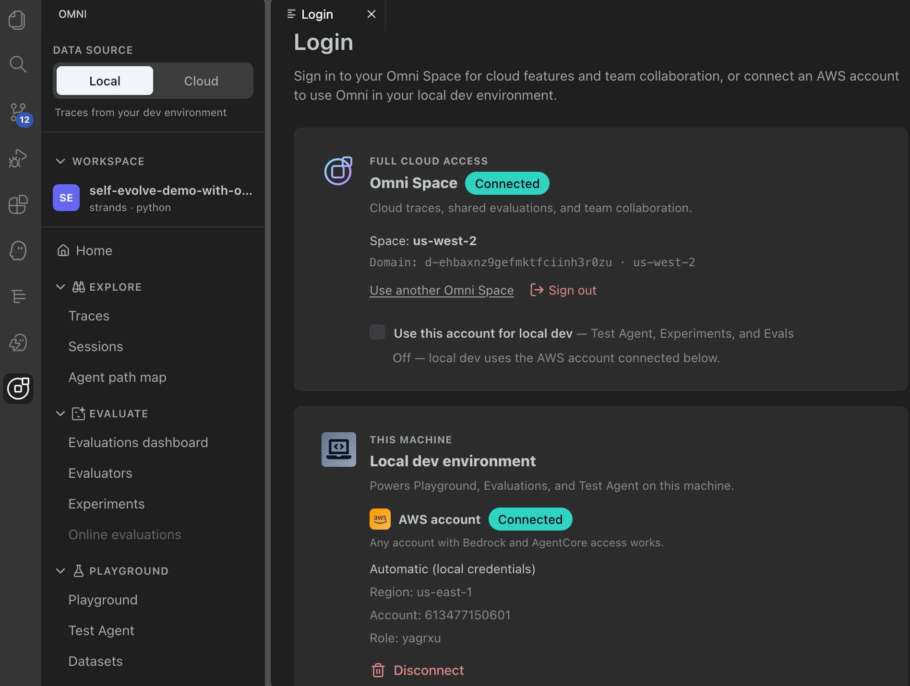
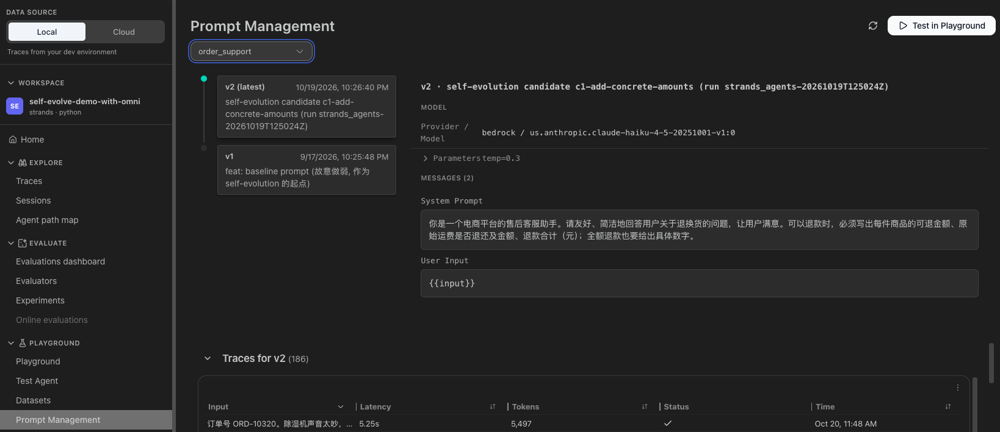

assets/omni-local-trace.png
assets/omni-cloud-trace.png换 prompt 只需重启 dev server，不用为每个候选部署一个 runtime。分钟级出一轮 replay。
失败样本从云上 trace 拉回本地复现；生产在线评估就是 run 之前冻结的标尺。
Omni 的能力以 MCP 工具暴露，Kiro / Claude Code 里的 agent 按 skill 一步步执行、每步停下给人确认。

assets/omni-skill-mcp-cli.gifomni-self-evolution v2）：11 个步骤、停点、不变量、分阶段门禁 —— 告诉 agent「做什么、不能做什么」scripts/omni.mjs 调 MCP；se_*.py 做切分、诊断、bootstrap、门禁 —— 数字由脚本算，不由模型估bash training/omni/scripts/run_step.sh <n>，一次一步、跑完即停
assets/omni-login.png
assets/omni-local-span-prompt-hash.pngllm.prompt_template.version = c1-add-concrete-amounts · hash = fe94609a…由 Omni Prompt Management 管理；候选用 OMNI_PROMPTS_OVERRIDE 切换，代码不动。
本地启动命令同样带 ADOT；prompt_loader.py 把版本与 hash 写进 span。
Kiro 要带 AWS_REGION 启动（MCP proxy 不转发环境变量）；扩展 ≥ 1.1.0 握手需要 .omni/mcp-token。

assets/omni-online-eval-filter.gif
assets/omni-evaluators.pngget_evaluator 读真实值域 → evaluators.json体检发现：旧配置把 Helpfulness 值域记成 [0,6]（实为 [0,1]）、Harmfulness 方向记反、门禁里没有 safety；ThirdParty.AutoEval.Security 对引用政策的正常回复系统性误报 → 降为 report_only。

assets/omni-split-json.pngblake2b(scenario_id) 最低 30% 进 holdout，重跑结果相同 —— 不能「重摇到候选通过」
assets/omni-replay-baseline-version.pngorder_support-v1
assets/omni-replay-c3-version.pngc3-restructure-groundedmanage_test_agent {action:"set_start_command", command:"OMNI_PROMPTS_OVERRIDE=c1/prompts.json opentelemetry-instrument python agent.py"} local_server {action:"start"} manage_test_agent {action:"invoke_agent", prompt} search_local_telemetry {operation:"get", traceIds} # 版本 / hash 不符 → 该格作废 manage_evaluations {action:"run", evaluatorId, targets:[{input, output, expected}]}
baseline 在这一步重新跑，不复用诊断阶段的数据；本地 SESSION 级 evaluator 所有调用共享一个 collector session，只有 1 个有效观测，不进门禁。

assets/omni-prompt-management.pngagent/prompts.json：记录前后 sha256，生成备份与 writeback/REVERT.sh
assets/omni-prompt-diff.png